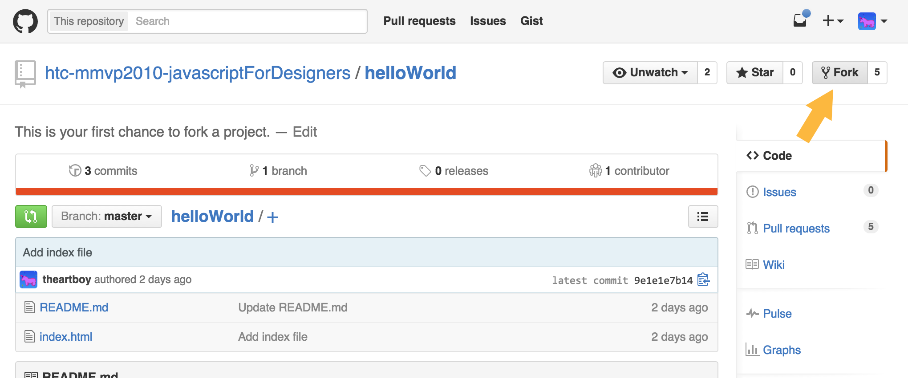
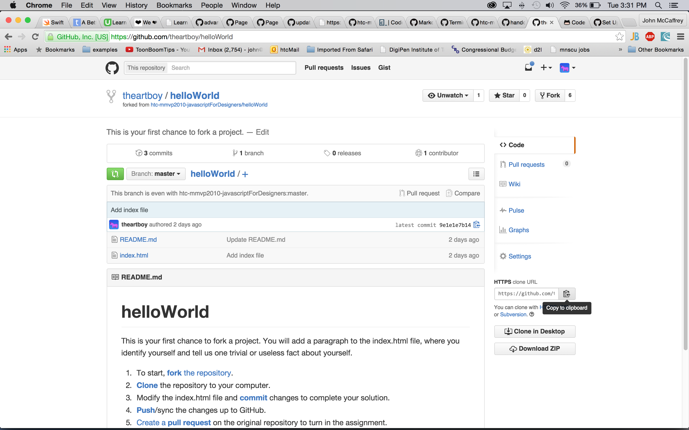
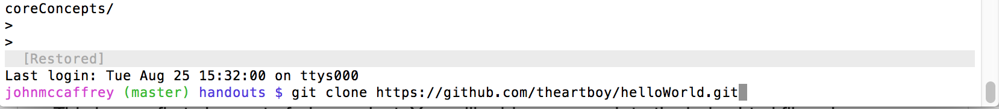

Go to the class project page for helloWorld Click on the fork button (look for the arrow in the image below) to add a fork of this project to your own github page. 
After you click on forking, it is time to clone the repo to your local drive or computer. Click the copy to clipboard link in the clone option on the right side of the screen.
Now go back to Terminal wher it is time to clone the repo. Type git clone and then paste the contents of the clipboard and hit return to finish the clone.
Go ahead and modify the files as needed to work on your project.
After you have updated files, included images, and the other work on your project, you are ready to begin the commit. In Terminal, type the following: <
git add --all git commit -m "Your commit message here" git push -u origin master
You will be prompted to supply your github.com user name and password to finish the process. Now go back to your github project page. Click on the pull request button and follow the options on the screen to submit your pull request.
Now, relax and take a break. Your work is done until your pull request has been approved or denied. Good job on getting this far.